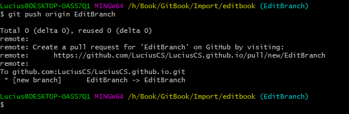

常用Git操作
一、将本地已有仓库推送到远程仓库
1、将本地仓库与远程仓库建立关联
git remote add github git@github.com:Lucius/GitTest.git查看本地仓库与远程仓库关联情况
git remote -v删除与远程仓库关联
git remote rm origin2、设置用户名和密码
git config -global user.name "" git config -global user.email ""- 3、设置SSH Key,
生成SSH Key
-t 指定密钥类型，默认是 rsa ，可以省略。 -C 设置注释文字，比如邮箱。 -f 指定密钥文件存储文件名。ssh-keygen -t rsa -C "your_email@example.com" 在GitHub中设置SSH，即将.ssh.id_rsa.pub中的内容添加到Key中
在GitHub中设置SSH，即将.ssh.id_rsa.pub中的内容添加到Key中

- 4、建立本地到上游（远端）仓的链接，建立链接后代码才能提交上去
当本地仓库与远程仓库没有相同的commit时，git不允许提交会出现git branch --set-upstream-to=originfatal: refusing to merge unrelated histories错误，需要使用下面命令：git pull origin master --allow-unrelated-histories - 5、将本地仓库推送至远端
如果出现Permission denied(publickey)，则说明第3步中的公钥配置错误git push -u origin master 推送正常
推送正常

二、将本地分支提交到远程
1、建立本地到上游（远端）仓的链接
git branch --set-upstream-to=origin
2、拉取远程分支内容
git pull --allow-unrelated-histories- 3、将本地分支推送至远程
git push origin EditBranch
三、合并多次提交
git rebase -i HEAD~3
如果在合并的过程中出现冲突需要先解决冲突，再进行合并
git rebase --continue
如果放弃本次合并，使用
git rebase --abort